Naam: Lars van Kessel Leeftijd: 25 y/o Studentnummer: 606615 Mail: LWPG.vankessel@student.han.nl Studierichting: Bedrijfskunde Woonplaats: zie Maps hieronder
Deze minor omdat:
deze minor sprak me erg aan omdat ik voorafgaand aan het HBO een MBO-ict aplicatie beheer studie heb gedaan. binnen deze studie heb ik al wat geprogrammeerd en wat kennis opgedaan m.b.t. databases etc. ik neem aan dat dit aansluit bij smart industrie. verder kom ik bij deze minor door mond op mond reclamen van een ex MSI student.
Competenties:
Buiten mijn bubbel treden
Vraag anderen om hulp
werk aan je presentatie skills
hoe ik de competenties heb aangepakt vindt u terug in de tekst in mijn portfolio
Portfolio
Overzicht alle gevolgde deel vakken, bevindingen & persoonlijke ontwikkeling
Smart Porject
Project C2Ost
Smart Business
Slimme bedrijfsvoering
Smart Technology
Technieken
Smart Me
Persoonlijke ontwikkeling
Smart Connection
Website Design
Tips & Tops minor
Mijn bevindingen m.b.t. de minor
Stuur mij een bericht
Smart project
Digitalisatie middel CP voor het Kenniscentrum te landmacht Stroe
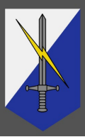
Voor de start van dit project kregen wij als gehele klas een aantal pitches met betrekking tot openstaande opdrachten. Deze opdrachten varieerde enorm. Ik en mijn huidige groepsgenoten hebben uiteindelijk gekozen voor de volgende opdracht:
Het onderzoeken naar visualisatie middelen die ingezet kunnen worden voor de digitalisering van een CP (Commando Post).
Om bij het begin te beginnen: in de eerste paar weken zijn wij vooral bezig geweest met het uitvogelen wat de defensie precies inhield, waar we welke informatie beschikbaar is en of wij deze informatie mogen/gebruiken.
Na de eerste 2 weken wisten we waar we onze informatie vandaan konden halen en wat we mochten gebruiken.
Eerst zijn we aan de slag gegaan met het maken van het PVA en het daarin grondig kijken naar de randvoorwaarden. We hebben een scope opgesteld (beschreven wat wij opleveren)en een tijdsfasering gekoppeld aan dit alles. Zie voor PVA het PFD hier onder.
Na het PVA zijn we echt diep in de materie gedoken en hebben we vooral gekeken naar wat de defensie al allemaal kan en in huis heeft qua soft-/hardware en kennis. Hiervan heb ik geleerd dat vooral binnen een organisatie als de defensie het lastig is om tot bruikbare en niet gedateerde informatie te komen.
Tijdens de zoektocht naar toepassingen zijn we bij verschillende organen binnen geweest waaronder: het SVBBD, SCK, SimCenland en LEARN. Hier hebben wij dingen gezien zoals de Satcom.
Satcom is een VR omgeving waarin de bestuurder een satelliet communicatie systeem in elkaar zet. Hij of zij kan stap voor stap het proces doorlopen totdat de satelliet communicatie volledig is opgezet. Wij hebben hier naar gekeken en geconcludeerd dat een soort gelijk systeem in elkaar zetten voor een CP kennismaking te lang zou duren en te veel geld zou kosten voor wat het uiteindelijk oplevert
Na dit gezien te hebben zijn we naar het SCK geweest. Dit is het Simulatiecentrum Koninklijke marechaussee. Hier beschikten ze over Virtuele brigade, XVR simulatie en Montioncapture suits. Met de XVR omgeving bootsten ze situaties na, die zich in het echt ook voor zouden kunnen doen. Dit om marechaussee personeel voor te bereiden op reële situaties.
Hieronder ziet u mij in een stress test ontwikkeld in VR
Uiteindelijk hebben wij voor geen van de beschikbare Technologieën gekozen. uit onderzoek en daarmee wordt vooral deskresearch bedoeld bleed dat een 360 graden video voldeed aan de eisen en het goedkoopste is. alle informatie nodig voor de overweging kunt u hier onder vinden in de slidedeck.
Uiteindelijk is uit overleg en een presentatie gebleken dat er draagvlak is voor dit idee, echter zal er op korte termijn niets mee gedaan worden. verder heb ik veel kennis opgedaan met betrekking tot dit soort organisaties, erg bureaucratisch. dit pas niet bij mij als persoon. voor mij is het nodig ergens druk van te voelen, of uit een financiele hoek, of uit een duidelijk aansturend orgaan. dat was bij de defensie totaal niet aan de orde.
Smart Business
Slimme bedrijfsvoering
introductie smart business
Week een draaide vooral om onszelf hierbij was het de bedoeling dat we de volgende vragen voor onszelf zouden beantwoorden:
waarom vind je het onderwerp smart industry boeiend?
wat wil je met het onderwerp gaan doen?
Over welke relevante kennis en vaardigheden beschik je al en op welke vlakken ga je jezelf ontwikkelen?
welke partners en faciliteiten he je nodig en hoe vind je die?
Waarom boeit smart industry mij? ik vind het van belang continu te verbeteren en mijn visie is dat dit zal gebeuren door de industriële revolutie. momenteel verkeren wij in industry 4.0. ik ben van mening dat de kracht van quantum computing en AI bedrijven tot een ander level kunnen tillen door de kennis die zij kunnen verzorgen en de capaciteit waarmee zij kunnen rekenen. het geen dat ik hiermee wil gaan doen is vooral kennis vergaren voor mijzelf. ik vind het erg interesant maar weet er nog niet veel van. ik hoop door middel van deze minor mij dusdanig te ontwikkelen dat ik later tijdens mijn loopbaan dingen zoals Digital twinning kan introduceren en misschien wel toepassen.
Qua kennis: dit heb ik nog niet zoveel op het gebied van smart industry. wel heb ik een ICT en mediabeheer opleiding gevolgd en denk ik dat dit in elkaar verlengde ligt. smart industry these days hangs samen met IT doorbraken, denk aan bijvoorbeeld de neurolink van elon musk. welke partners heb ik nodig om mijn ontwikkeling te waarborgen?
ik denk dat ik binnen de minor vooral gastsprekers erg ga waarderen zowel als de docenten. ook hoop ik veel van mijn medestudenten te kunnen leren.
AXA case
Tijdens de smart business meeting in week 3 kwam het BMC ook wel business model canvas ter spraken. wat houdt dit in?
Het Business Model Canvas is een visueel model voor het ontwerpen, uitdagen en verbeteren van business modellen. Het is een 1-pagina overzicht van 9 bouwstenen die belangrijk zijn voor elk bedrijfsmodel: klantsegmenten, waardepropositie, kanalen, klantrelaties, bronnen, activiteiten, partners, inkomstenstreams en kostenstructuur. Het stelt ondernemers en managers in staat om snel inzicht te krijgen in hun bedrijf en om efficiënt aanpassingen te maken.
ook hebben wij tijdens deze les zelf een BMC gemaakt voor de AXA cassus zie de fotos hieronder
wat heeft AXA precies gedaan en wat moesten wij in beeld brengen met het BMC?
Het bedrijf AXA heeft door middel van een dongel in autos minder auto-schade weten te realiseren en dus minder verzekeringsgeld hoeven uit te keren aan consumenten. Een dongel is een klein apparaatje dat in de auto wordt geplaatst en gegevens verzamelt over hoe de auto wordt gebruikt, zoals snelheid, gasgebruik, remgedrag en rijstijl.
Door deze gegevens te analyseren, kan AXA inzicht krijgen in hoe consumenten hun auto's gebruiken en waar de grootste risico's zijn voor auto-schade. Op basis hiervan kunnen ze gericht beleid ontwikkelen om auto-schade te voorkomen, bijvoorbeeld door het aanbieden van rijtraining aan bestuurders die snel rijden of hard remmen.
Daarnaast kan AXA door middel van de dongel in real-time informatie verkrijgen over het rijgedrag van hun verzekerden, wat hen in staat stelt snel in te grijpen bij potentiële problemen. Bijvoorbeeld, als ze zien dat een bestuurder hard remt of plotseling uitwijkt, kunnen ze direct contact opnemen met de bestuurder om hem of haar te waarschuwen voor gevaarlijk rijgedrag.
Dankzij de dongel heeft AXA minder auto-schade hoeven uit te keren aan consumenten, omdat ze proactief beleid kunnen ontwikkelen om schade te voorkomen en in real-time kunnen reageren op gevaarlijk rijgedrag. Hierdoor kunnen ze het verzekeringsrisico verlagen en het vertrouwen van hun verzekerden versterken door hen te voorzien van betere en meer gepersonaliseerde verzekeringsdiensten.
later hebben wij een workshop gekregen met betrekking tot het TOM-model (target operating model) van Paul Kalis. wat houdt dit model eigenlijk in? Het Target Operating Model (TOM) van Paul Kalis richt zich op de verbetering van de bedrijfsprocessen van organisaties. Het doel van het model is om een heldere, gedeelde visie en richting te creëren voor de interne processen van een bedrijf, zodat deze efficiënter en effectiever kunnen worden uitgevoerd.
Het TOM-model omvat een aantal stappen, waaronder het identificeren van de belangrijkste processen van een bedrijf, het ontwikkelen van een toekomstgerichte visie voor deze processen en het implementeren van verbeteringen en veranderingen op basis van deze visie. Het model richt zich op het verbeteren van de processen van een bedrijf door middel van het implementeren van nieuwe technologieën, het verbeteren van de samenwerking tussen verschillende afdelingen en het aanscherpen van interne regels en procedures.
Het TOM-model wordt gebruikt door bedrijven om hun processen te optimaliseren en zo meer waarde te creëren voor hun klanten. Het model is ook bruikbaar voor het identificeren van inefficiënties en knelpunten in de processen van een bedrijf en het aandragen van oplossingen voor deze problemen. Het model is daarom een waardevol instrument voor het verbeteren van de bedrijfsprocessen en het realiseren van groei en succes op de lange termijn.
door middel van het TOM model is er gekeken naar AXA en welke processen belangrijk zijn en hoe deze verbeterd kunnen worden, dit met dank aan Paul Kalis
Smart technology
Ecosysteem meter plant
Tijdens de lessen Smart Technology zijn we aan de slag gegaan met het kennis maken met, ontwerpen van en het testen van een meter voor een plant ecosysteem. dit houdt in dat de volgende stappen zijn ondernomen om tot een product te komen.
Kennis maken met coderen en Electrotechnische schakelingen
het begrijpen van de schakeling
Code schrijven en uploaden op het ESP32
Maken van het curcuit board
Het maken van het 3D geprinte bakje
samestellen van alle componenten
ik ga aan de hand van afbeeldingen en toelichtingen laten zien welke stappen ik heb ondernomen
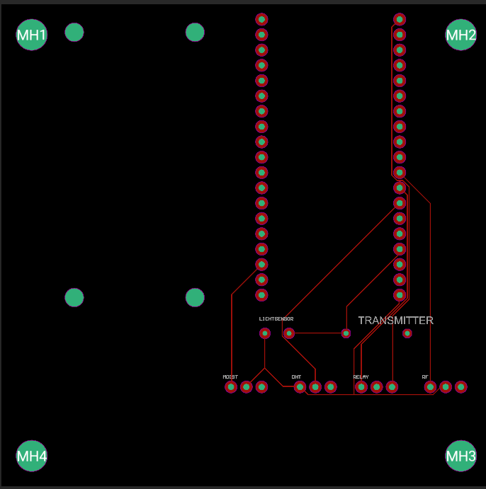
hierboven ziet u het ontwerp van de PC. het PC in elkaar zetten was niet erg moeilijk. de gegeven uitleg bij het ontwerpen was goed en de bijgeleverde filmpjes spraken boekdelen. dit alles maakte het een makkelijke klus. wel heb ik geleerd dat ik dit soort ontwerpen erg interesant vind om te maken. ik ben er niet speciaal goed in maar pak het naar mijn mening redelijk goed op.
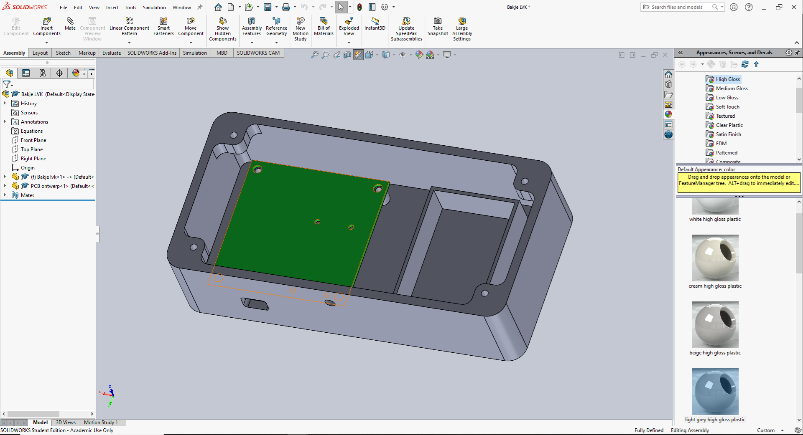
tijdens het maken van het bakje heb ik echter Hulp gevraagd aan een mede student. dit was ook een van mijn te ontwikkelen competenties. uit je comfortzone stappen, wat dat voor mij betekend is het vragen voor hulp bij anderen. de student Rick Sanders heeft met mij stap voor stap doorlopen hoe ten eerste het programma werkt en ten 2e hoe ik onderdelen van het bakje in elkaar kan zetten (samenvoegen). ik ben Rick ook erg dankbaar voor zijn hulp. hoe makkelijk het PCS ging zo lastig vond ik dit.
misschien kwam dit omdat ik eigenwijs ben geweest en geen gebruik heb gemaakt van de tutorial. ik wilde het "op eigen kennis" doen. dit was echter niet een van mijn beste ideeën.
Na het bakje gemaakt te hebben heb ik het bestand ingeladen in Multimaker om dit bestand vervolgends toe te kunnen sturen aan het fablab te HAN Arnhem. Nadat ik dit eenmaal had opgehaald kon ik eindelijk beginnen aan de assambly van het geheel.
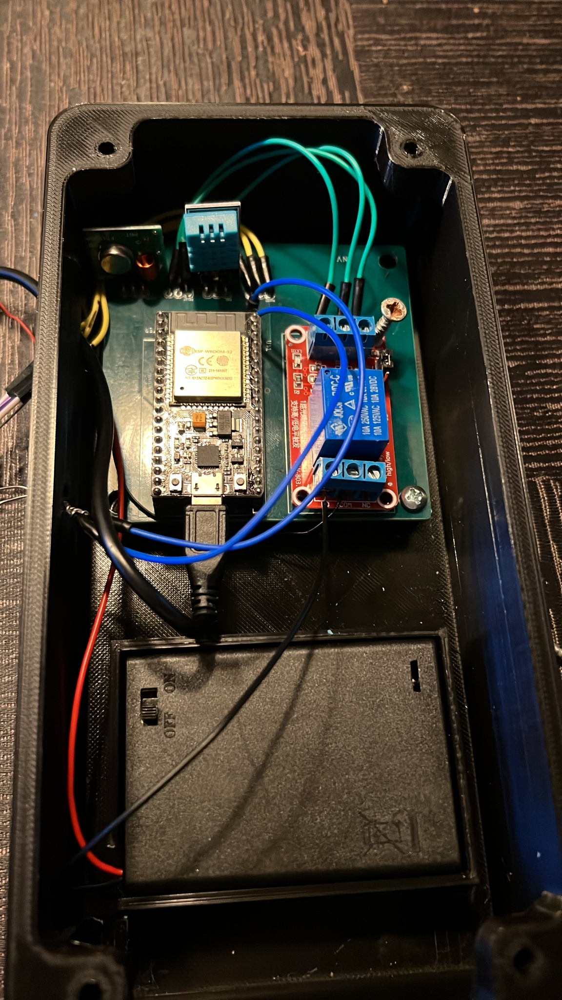
Na het solderen van alle onderdelen op de circuit board heb ik alles gemonteerd in mijn 3d geprinte bakje. hierin ziet u dat ik de battery pack appart heb gehouden van het gedeelte waarin de PC is geinstalleerd. verder heb ik aan de linker zeide een gat gelaten voor de benodigde kabels die naar buiten moesten en de lichtmeter.
verder heb ik nog wat fotos van het complete product, zie daarvoor de foto's hieronder
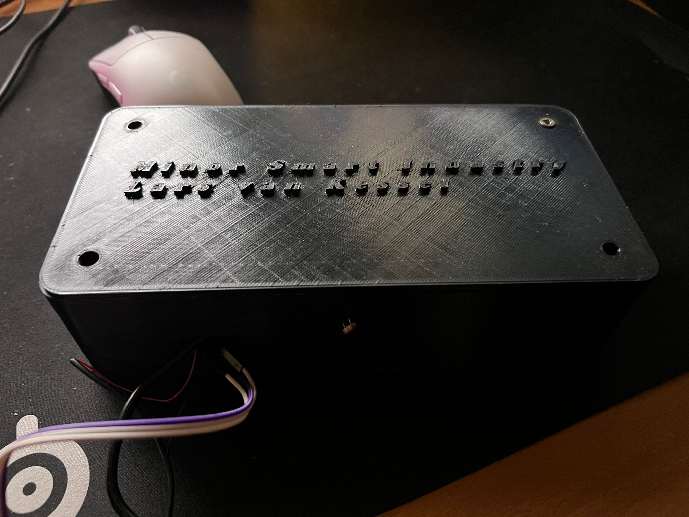 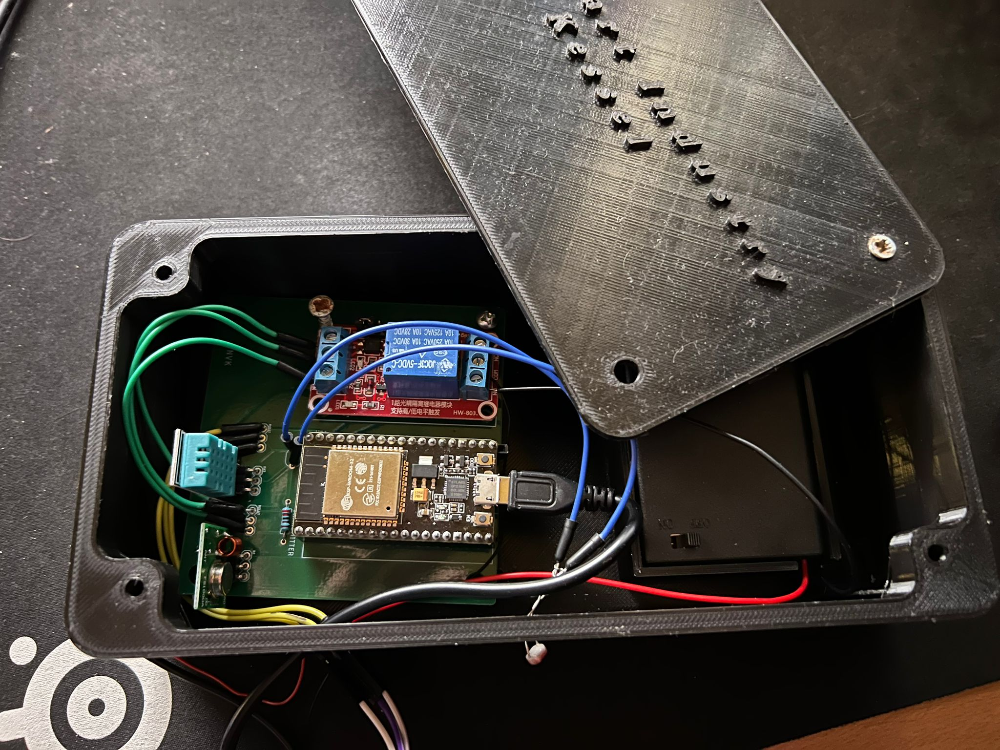
Smart Me
Persoonlijke profsesionele ontwikkeling
Tijdens de eerste bijeenkomst van de lessen Smart me hebben we gekeken naar het eerste puzzelstukje van mijn zelf ontwikkeling. Wat betekend mijn stukje voor het grote geheel? Tijdens het uitvoeren van mijn opdracht, ben ik erachter gekomen dat de input van mijn stukje veel oplevert. Het onderzoekend werk voor de defensie naar slimme technologieën voor trainingsdoeleinden heeft ten eerste invloed op de afdeling waar ik mij momenteel bevindt. Daarbuiten heeft het (mits bruikbaar gevonden) in vloed op de gehele organisatie en haar opleidingsontwikkelingen.
Welke relaties met andere elementen binnen Smart Industry kun je ontdekken? ik vind het interessant om te zien wat de koppelpunten zijn tussen de verschillende onderdelen binnen smart industry. Ik denk hierbij aan: Databases met webpagina’s, of VR koppelingen met 3D scan technieken.
Door kennis te vergaren over bovenstaande en er achter te komen hoe deze toe te passen zijn. Hoop ik in de toekomst beter uit de voeten te kunnen met verschillende tech. Ook hoop ik dat ik door deze kennis bedrijven slimmer kan laten handelen in mijn toekomstige loopbaan. Dat is een van mijn streefpunten binnen deze minor. Een zo breed mogelijk scala aan kennis opbouwen.
Verder is er tijdens de 2e week een kook cursus gegeven ter ondersteuning van teambuilding. Voor deze minor is het erg belangrijk fatsoenlijk in teams te kunnen werken. Dit is ook een van mijn competenties. Ik ben een tijd uit de “school running” geweest dus ben het werken in groepsverband aardig kwijt.
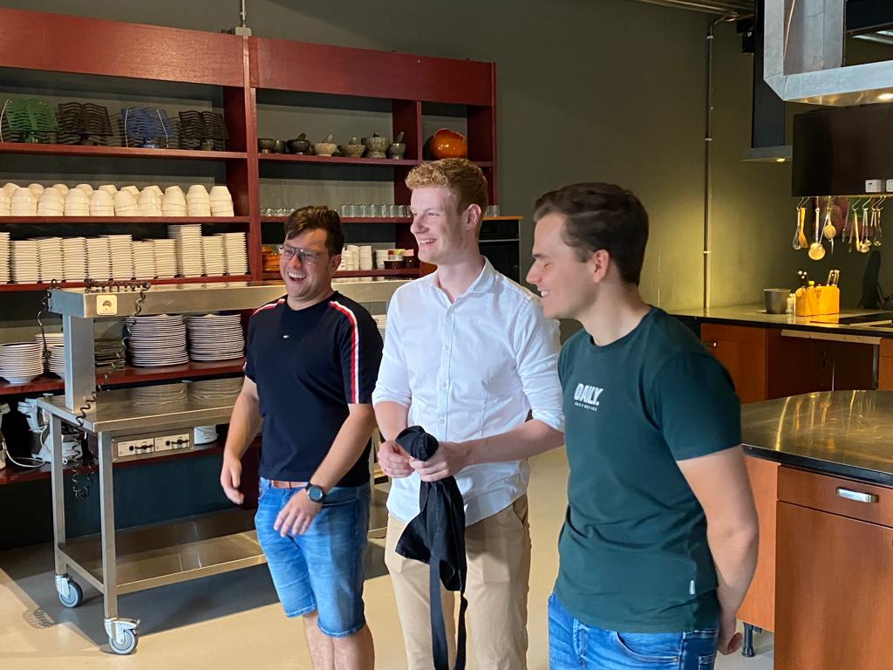
Wat ik van deze dag heb geleerd is dat er binnen een bedrijft verschillende eilandjes zijn. Deze werden in ons geval uitgedrukt in voor- hoofd- en nagerecht. Deze eilandjes kunnen slecht afzonderlijk van elkaar werken. Ze hebben elkaar constant nodig. Er moet dus onderling goed worden overlegd voordat acties lukraak worden ondernomen.
Ook hebben we een value proposition voor onszelf opgesteld:
Gain Creators: het geen dat ik mee neem naar deze minor aan kennis: basis kennis van HTML, css, C++ en Java. Verder heb ik kennis van verandermodellen, organisatiestructuren de daar bij passende culturen en modellen. Bijvoorbeeld: mintzberg. Marketing, meso, macro en micro marketing. Dus zowel intern als externe marketing. Product placement & value propositions. Dit zal op het bedrijfskundig gebeid van de minor veel voordelen geven.
Products & service: ideaal houdt voor mij in het soepel doorlopen van de minor zonder haken of ogen. Dus op zo min mogelijk problemen stuiten. Echter schetst de realiteit vaak wat anders. Door middel van hulp van anderen en het samenwerken met mijn collega studenten. Kennis vergaren, toepassen & als mogelijk implementeren binnen het bedrijf dat toegewezen wordt.
Pain Relievers: extrinsieke motivatie, de motivatie vanuit mijzelf om iets te bereiken. Ik vind het belangrijk om niet stil te zitten en zo snel mogelijk dingen op te pakken. Verder is het voor mij van belang een stok achter de deur te hebben. Dus groepsgenoten die in staat zijn en bereid zijn mij te sturen waar nodig.
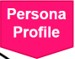
Gains: na de minor de vertaalslag kunnen maken van de digitale kant van een bedrijf naar een operationele/sturende laag. Het versnellen en verbeteren van een proces door middel van AI lijkt me ook erg interessant, de mogelijkheden hiervan en de afbakeningen hiervan. Wat zijn de limieten? Wat “mag” binnen het bedrijft leven etc. ook communicatie is een belangrijke voor deze minor. Het groepswerk is hier een rode draad voor.
Kortom ik wil mijzelf verder ontwikkelen op communicatief gebied, dus het groepswerk verbeteren. Mijn kennis verbreden op het gebied van programmeren. Begrijpen van verschillende talen en weten waarvoor ze gebruikt kunnen worden. Potentieel toepassen in het toekomstig werkveld.
Pains: de dingen die mijn succes in de weg kunnen staan zijn motivatie op momenten van moeilijkheid. Ook mijn gebrek aan kennis op het gebied van programmeren kan mij in de weg staan. Hiervoor ga ik opzoek naar een collega student die mij wellicht kan helpen.
Customer Job: verbredende kennis met betrekking tot het slimmer maken van een werkomgeving. Denk hierbij aan trainingen door middel van VR omgevingen of het inzetten van iets simpels zoals een API op een website ter toegankelijkheid van verschillende programma’s
Ook hebben we tijdens de samenkomsten van Smart Me lezingen gekregen van Jos sanders & Luc dorenbosch, Ilke Onner. Wat ik hier uit heb mee genomen is dat het zelf kunnen bepalen waar je vreugd uit haalt en hoe je tegenover je werk staat erg belangrijk is. Het energie halen uit en niet investeren in werk is belangrijk anders is de kans dat je jezelf over werkt nogal aanwezig.
De Bewust van je Eigen Brein cursus van Ilke Oner richt zich op het vergroten van bewustzijn over hoe ons brein werkt en hoe we ons denken en emoties kunnen beïnvloeden. Door inzicht te krijgen in onze eigen hersenen, kunnen we beter begrijpen hoe we onze gedachten en emoties kunnen reguleren en beïnvloeden.
Een belangrijk onderdeel van de cursus is het creëren van rapport. Dit houdt in dat we ons bewust worden van hoe we communiceren met anderen en hoe we onze interpersoonlijke verhoudingen kunnen verbeteren. Het creëren van rapport met anderen is cruciaal voor effectieve communicatie en samenwerking. Tijdens de cursus leren deelnemers hoe ze beter kunnen luisteren, begrijpen en connectie kunnen maken met anderen, wat leidt tot betere verhoudingen en samenwerking.
De Bewust van je Eigen Brein cursus biedt praktische en toepasbare vaardigheden die deelnemers kunnen toepassen in hun dagelijks leven, werk en relaties. Door bewust te worden van ons brein en hoe we ons denken en emoties kunnen beïnvloeden, kunnen we onze doelen bereiken en een meer bevredigend leven leiden.
ik heb van deze lezing veel geleerd, vooral dat ik mijzelf misschien wat strakker in de ogen moet aankijken en relatieveren wat er nodig is mijn oplieding te behalen. dit om er on the long run energie uit te kunnen gaan halen!
Smart connection
Webdesign
wat ik heb geleerd en gedaan tijdens de lessen "Webdesign" is een hele hoop. laat ik bij het begin beginnen. tijdens de eerste les draaide het vooral om het kennis maken met webpagina's en de databases daar achter. ter kennismaking hebben we een Mentalmodel gemaakt van een webserver omgeving en de daarbij horende codeertalen. naar mijn weten zag dit er als volgdt uit:
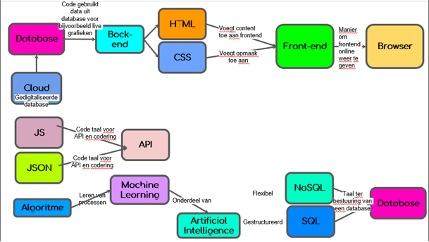
na de eerste week en een hoop uitleg mochten we dan eindelijk beginnen met onze eerste webpagine, the good old standard: Hello world pagina. de code voor hello world ziet u in de volgende afbeelding wanneer deze code geschreven is krijg je de meest standaard html pagina zonder enige verder opmaakt. de pagina ziet er als volgd uit: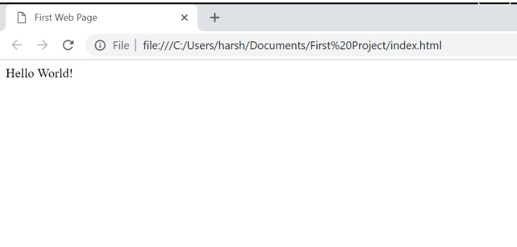
Hierna kregen we de opdracht om een playlist of current weather frame weer te geven op onze website. ik heb gekozen om een frame te maken met daarin een spotify playlist
een van de laatste bijeenkomsten stond in het thema van machine learning. om dit the showcasen hebben we via teachable machine een automatische voorwerp herkenner gemaakt en deze embed op mijn website.
Teachable Machine Image Model
Tips & Tops MSI
mijn bevindingen en ervaringen
Tijdens de minor zelf is er gevraagd naar tips & tops, on the spot kwam ik niet goed op ideeën. Echter achteraf heb ik een paar tips die aankomende periode megenomen kunnen worden.
Zorg voor passende projecten bij de Minor
Laat de student zelf meer uitvogelen, vooral bij smart technology wordt alles stap voor stap voorgedaan
Bheandel bij smart business misschien meer casustieken dan AXA, naar mijn mening wordt dit eentonig
verder heb ik erg genoten van de minor en veel geleerd, zowel over de defensie, als met betrekking tot industrie 4.0. ik kijk ook erg uit naar mijn komende loopbaan en het intergreren van slimmentechnieken binnen deze werkzaamheden. het geen dat me ook erg aansprak was het uitstapje naar de Wageningen Universiteit. ik heb hier veel geleerd en heb mijn ogen uitgekeken tijdens de presentatie m.b.t. digital twinning.
verder wil ik Pieter erg bedanken voor de goede coördinatie tijdens het project dat wij liepen bij de defensie, soms was dit echt nodig, TOP BEGELEIDER! geeft een andere blik op scenario's dan wij (als "jeugd") soms zien.
al met al een top tijd gehad bij zowel de defensie als de minor op school!


 wanneer deze code geschreven is krijg je de meest standaard html pagina zonder enige verder opmaakt. de pagina ziet er als volgd uit: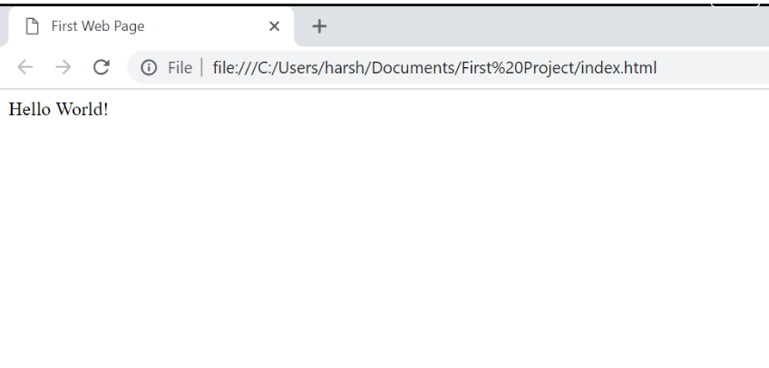
wanneer deze code geschreven is krijg je de meest standaard html pagina zonder enige verder opmaakt. de pagina ziet er als volgd uit: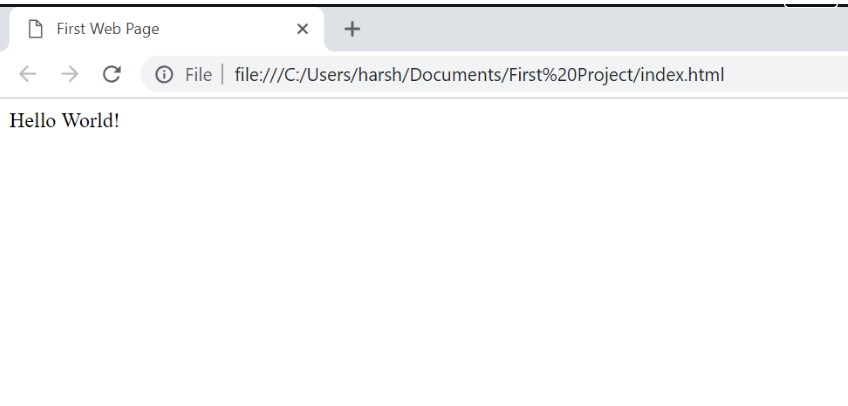